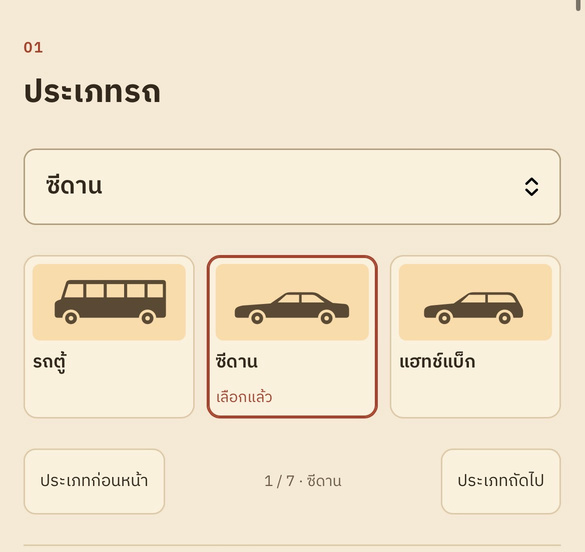

01
เพื่อศึกษาความสำคัญปัจจัยที่มีอิทธิพลต่อการประเมินราคารถยนต์มือสองในประเทศไทย
โครงงานวิจัย · การเรียนรู้ของเครื่องแบบมีผู้สอน
จากราคาที่ผันผวน สู่ตัวแบบที่ช่วยประเมินราคากลางอย่างสมเหตุสมผล เรื่องราวหนึ่งการเดินทางของข้อมูล 46,074 คัน
หรือเลื่อนลงเพื่ออ่านทีละฉาก
ทีมผู้จัดทำ
งานวิจัยนี้เกิดจากทีม 5 คนที่ช่วยกันตั้งแต่เก็บข้อมูล ทำความสะอาดข้อมูล ไปจนถึงสร้างเว็บแอปพลิเคชัน
ที่มาและความสำคัญ
ดัชนีราคารถยนต์มือสองเปลี่ยนขึ้นลงตามเศรษฐกิจและปัจจัยรอบตัว เราจึงอยากเข้าใจว่าอะไรทำให้ราคาแตกต่าง และช่วยให้ผู้ซื้อผู้ขายเห็นราคากลางที่สมเหตุสมผล
ปัจจุบันรถยนต์เข้ามามีบทบาทสำคัญต่อการดำเนินชีวิตและการประกอบอาชีพของคนไทยเป็นอย่างมาก ซึ่งรถยนต์มือสองถือเป็นทางเลือกยอดนิยมเนื่องจากมีราคาเข้าถึงได้ง่ายและมีตัวเลือกหลากหลาย อย่างไรก็ตาม ราคากลุ่มรถมือสองมักมีความผันผวนตามสภาวะเศรษฐกิจและปัจจัยรอบด้าน เช่น ยี่ห้อ รุ่น ประเภทรถ ปีที่ผลิต และเลขไมล์ ฯลฯ
ดัชนีราคารถยนต์มือสอง พ.ศ. 2563–2568 · กำหนดปีฐาน พ.ศ. 2558 = 100
ที่มา: ดัชนีราคารถยนต์มือสอง ธนาคารแห่งประเทศไทย (2569) — สะท้อนถึงความผันผวนของราคาตามสภาวะตลาดและปัจจัยแวดล้อม
*กำหนดปีฐาน (Base Year): กำหนดให้ปี พ.ศ. 2558 มีค่าดัชนีเท่ากับ 100
วัตถุประสงค์ในการศึกษา
สามคำถามนี้กำหนดทุกขั้นตอนของการศึกษา ตั้งแต่เลือกตัวแปร ไปจนถึงการสร้างเครื่องมือใช้งานจริง
เพื่อศึกษาความสำคัญปัจจัยที่มีอิทธิพลต่อการประเมินราคารถยนต์มือสองในประเทศไทย
เพื่อเปรียบเทียบประสิทธิภาพในการประเมินราคารถยนต์มือสองของวิธี Decision Tree Regression, Random Forest Regression, XGBoost
เพื่อสร้าง Web Application ที่ใช้ตัวแบบที่มีประสิทธิภาพสูงสุด สำหรับประเมินราคากลางที่สมเหตุสมผลแก่ผู้ซื้อและผู้ขายรถยนต์มือสอง
ขอบเขตงานวิจัย
ขอบเขตที่ชัดเจนช่วยให้รู้ว่าผลการศึกษานี้ครอบคลุมอะไร และนำไปใช้ต่อในบริบทใดได้บ้าง
ห้องปฏิบัติการคอมพิวเตอร์ ภาควิชาสถิติ คณะวิทยาศาสตร์ มหาวิทยาลัยเกษตรศาสตร์ และที่พักของผู้วิจัย
โปรแกรมสำหรับการเขียน Python, Microsoft Excel และ Microsoft Word
กรกฎาคม พ.ศ. 2569 – พฤศจิกายน พ.ศ. 2569 (ประมาณ 5 เดือน)
ประโยชน์ที่คาดว่าจะได้รับ
งานนี้ไม่ได้หยุดที่ตัวเลขในรายงาน แต่ตั้งใจส่งมอบความรู้และเครื่องมือที่ใช้ตัดสินใจได้จริง
ได้ทราบความสำคัญของปัจจัยที่มีอิทธิพลต่อราคารถยนต์มือสอง
ผลที่ได้: อายุรถยนต์และขนาดเครื่องยนต์สำคัญที่สุด (อันดับ 1-2 ในทั้ง 3 ตัวแบบ) รองลงมาคือประเภทรถยนต์
ได้ทราบผลการเปรียบเทียบประสิทธิภาพของแต่ละวิธีที่ใช้ในการวิเคราะห์
ได้ Web Application สำหรับประเมินราคารถยนต์มือสอง
ภาพรวมการทำงาน
ข้อมูลถูกแบ่งเป็นชุดฝึกและชุดทดสอบ แล้วเดินคู่ขนานกัน เพื่อให้ตรวจสอบได้ว่าตัวแบบทำงานกับข้อมูลใหม่ได้ดีจริง
หกหัวข้อที่จะพาเราไปจากข้อมูลดิบ สู่ผลลัพธ์ที่ตีความได้
การเตรียมข้อมูล
ข้อมูลจากสองเว็บไซต์ถูกนำมาทำความสะอาดตามเงื่อนไขเดียวกัน เหลือ 46,074 คันที่พร้อมใช้วิเคราะห์
ตัวแปรและวิธีที่ใช้ในการศึกษา
ตัวแปรตามคือราคารถยนต์มือสอง ส่วนตัวแปรอิสระทั้งแปดคือสิ่งที่เราคาดว่าจะช่วยอธิบายความต่างของราคา
วิธีการที่ใช้ในการศึกษา
ทั้งสามวิธีใช้แนวคิดต้นไม้ตัดสินใจ แต่ต่างกันที่จำนวนต้นและการเรียนรู้จากข้อผิดพลาด ภาพเล็กๆ ด้านล่างเป็นตัวอย่างเพื่อให้เห็นแนวคิด ไม่ใช่ผลการศึกษา
การทำนายผลโดยใช้โครงสร้างต้นไม้ตัดสินใจ ตัวแบบจะแบ่งข้อมูลออกเป็นกิ่งก้านตามเงื่อนไขต่างๆ เพื่อหาคำตอบ ทำให้เข้าใจกระบวนการทำงานได้ง่าย
ราคาสูง
ราคาต่ำลง
ประยุกต์ใช้เทคนิคการเรียนรู้ที่สร้างจากต้นไม้ตัดสินใจหลายต้นร่วมกัน โดยมีการปรับแต่งค่าไฮเปอร์พารามิเตอร์ผ่าน GridSearchCV
ตัวแบบต้นไม้ตัดสินใจที่ใช้เทคนิค Boosting โดยให้ต้นไม้ต้นใหม่คอยเรียนรู้และแก้ไขข้อผิดพลาดจากต้นไม้ต้นก่อนหน้า จัดการกับชุดข้อมูลที่มีความซับซ้อนได้เป็นอย่างดี
การแบ่งชุดข้อมูล
เราแบ่งข้อมูลแบบ Stratified Split โดยใช้รุ่นรถ (X3) เป็นตัวแปรแบ่งชั้น เพื่อให้สัดส่วนของแต่ละรุ่นในชุดฝึกและชุดทดสอบใกล้เคียงกับข้อมูลจริง
Step 1 Population → Step 2 Strata → Step 3 Random Selection → Step 4 Split ตัวอย่างเพื่ออธิบาย
จุดสีต่างๆ คือตัวอย่างรถ 4 รุ่น (ตัวอย่าง) — จากแต่ละชั้น ประมาณ 80% ไปชุดฝึก และ 20% ไปชุดทดสอบ โดยรักษาสัดส่วนสีไว้
การปรับไฮเปอร์พารามิเตอร์
GridSearchCV ช่วยค้นหาชุดพารามิเตอร์ที่ดีที่สุดบนตารางค่า ส่วน K-Fold Cross Validation ทำให้ผลที่ได้ไม่ขึ้นกับการแบ่งข้อมูลเพียงครั้งเดียว
จุดสีเข้มคือค่าที่ให้ผลดีที่สุดบนตารางที่ลอง
การวัดค่าความคลาดเคลื่อน
สี่ตัวชี้วัดนี้ตอบคำถามต่างกัน ทั้งการอธิบายความแปรปรวน ขนาดความคลาดเคลื่อน และเปอร์เซ็นต์ความผิดพลาด ตัวเลขยิ่งสูงหรือต่ำดี ขึ้นอยู่กับตัวชี้วัด
บอกว่าตัวแบบอธิบายความแปรปรวนของราคาได้มากน้อยแค่ไหน
R² ยิ่งสูงยิ่งดีค่าเฉลี่ยของผลต่างสัมบูรณ์ระหว่างราคาจริงกับราคาที่ทำนาย
MAE ยิ่งต่ำยิ่งดีรากที่สองของค่าความผิดพลาดกำลังสองเฉลี่ย ให้ความสำคัญกับความผิดพลาดก้อนใหญ่
RMSE ยิ่งต่ำยิ่งดีร้อยละความคลาดเคลื่อนสัมบูรณ์เฉลี่ย เทียบกับราคาจริง
MAPE ยิ่งต่ำยิ่งดีค่าความสำคัญของตัวแปร
ถ้าสลับค่าของตัวแปรใดแล้วโมเดลทำนายแย่ลงมาก แปลว่าตัวแปรนั้นสำคัญ ความต่างของ Error ก่อนและหลังสลับคือค่า Permutation Importance
| X1 | X2 | X3 | X4 | X5 | X6 |
|---|---|---|---|---|---|
| A1 | B1 | C1 | D1 | E1 | F1 |
| A2 | B2 | C2 | D2 | E2 | F2 |
| A3 | B3 | C3 | D3 | E3 | F3 |
| A4 | B4 | C4 | D4 | E4 | F4 |
ไฮไลต์คอลัมน์ X3 แล้วสลับค่าภายในคอลัมน์
หลังสลับคอลัมน์ X3 ความผิดพลาดของโมเดลเพิ่มขึ้นเท่าไร นั่นคือค่าความสำคัญของ X3 ในโมเดลนี้
เทียบสามตัวแบบบนชุดทดสอบเดียวกัน แล้วเลือกตัวที่เหมาะกับงานจริง
ผลจากการวิเคราะห์ · 01
เริ่มจากต้นไม้ต้นเดียว ปรับความลึกและจำนวนตัวอย่างขั้นต่ำในใบ ผลลัพธ์คือตัวแบบที่เข้าใจง่าย แต่ยังมีค่าความคลาดเคลื่อนสูงกว่าอีกสองวิธี
ผลจากการวิเคราะห์ · 01 · 5-fold CV
แท่งคือ MAE (บาท) ในแต่ละรอบ เส้นประคือค่าเฉลี่ย 57,931 บาท
ผลจากการวิเคราะห์ · 01 · Training vs Testing
ผลจากการวิเคราะห์ · 02
รวมต้นไม้หลายต้นเข้าด้วยกัน แล้วใช้ค่า Out-of-Bag ช่วยเลือกจำนวนต้น ตัวแบบลดความคลาดเคลื่อนลงชัดเจนเมื่อเทียบกับต้นไม้เดี่ยว
ผลจากการวิเคราะห์ · 02 · 5-fold CV
แท่งคือ MAE (บาท) ในแต่ละรอบ เส้นประคือค่าเฉลี่ย 53,323 บาท
ผลจากการวิเคราะห์ · 02 · Training vs Testing
เส้นประแนวตั้งที่ 300 ต้น คือจำนวนต้นที่เลือก
ผลจากการวิเคราะห์ · 03
ใช้ Boosting ให้ต้นไม้ใหม่แก้ข้อผิดพลาดของต้นก่อนหน้า พร้อม Early Stopping ผลคือตัวแบบที่ให้ค่าความคลาดเคลื่อนต่ำที่สุดในทั้งสามวิธี
ผลจากการวิเคราะห์ · 03 · 5-fold CV
แท่งคือ MAE (บาท) ในแต่ละรอบ เส้นประคือค่าเฉลี่ย 52,256 บาท
ผลจากการวิเคราะห์ · 03 · Training vs Testing
ผลการเปรียบเทียบ · ชุดทดสอบ
เทียบทั้งสี่ตัวชี้วัดบนชุดทดสอบเดียวกัน R² ยิ่งสูงยิ่งดี ส่วน MAE, RMSE และ MAPE ยิ่งต่ำยิ่งดี ตัวเลขทุกตัวมาจากชุดทดสอบ ไม่ใช่ชุดฝึก
R² สูงดี; MAE, RMSE, MAPE ต่ำดี → XGBoost ดีที่สุดทุกตัวชี้วัด (R² 0.9458, MAE 51,271 บาท, RMSE 76,379 บาท, MAPE 9.74%)
Highlight
ดีกว่า Random Forest และ Decision Tree ในทั้ง 4 ตัวชี้วัด
Permutation Importance · ผล
แท่งยาวหมายถึงเมื่อสลับตัวแปรนั้นแล้ว MAE เพิ่มขึ้นมาก นั่นคือตัวแปรนั้นสำคัญต่อการทำนาย สลับแท็บเพื่อดูผลของแต่ละตัวแบบ
อันดับ 1 = สำคัญที่สุด · ไฮไลต์สองอันดับแรกของตัวแบบที่เลือก
Web Application
ผู้ใช้กรอกข้อมูลรถทีละขั้น แล้วเว็บจะประเมินราคาโดยประมาณพร้อมช่วงราคาที่สมเหตุสมผล ให้เห็นภาพก่อนตัดสินใจซื้อขาย

เพิ่มรถหลายคัน (คัน A, คัน B, ...) แล้วเปรียบเทียบพร้อมกันได้
ราคาโดยประมาณ
ช่วงราคาสมเหตุสมผล (±8%) 599,000 – 703,000
TOYOTA CAMRY · 2018 · 80,000 km
กราฟราคา 5 ปีข้างหน้า 2026 → 2031 (651,000 → 321,000) สมมติขับปีละ 15,000 กม.
สรุปผลจากผลการวิเคราะห์
ตัวเลขสำคัญสามค่าที่สรุปภาพรวมของงานนี้ คือความคลาดเคลื่อนที่ต่ำ การอธิบายความแปรปรวนได้สูง และตัวแบบที่พร้อมนำไปใช้จริง
XGBoost ดีที่สุด โดย MAE บนชุดทดสอบ 51,271 บาท และอธิบายความแปรปรวนได้ 94.23% (R² = 0.9423 จาก 5-fold CV) รองลงมาคือ Random Forest และ Decision Tree
ทั้ง 3 วิธีไม่มีปัญหา Overfitting ที่ส่งผลต่อการทำนายข้อมูลใหม่ เพราะ MAE บนชุดทดสอบไม่สูงไปกว่าค่าที่ได้จาก 5-fold Cross-validation
ขนาดเครื่องยนต์และอายุของรถยนต์สำคัญที่สุด รองลงมาคือยี่ห้อและประเภทของรถ ส่วนระบบเกียร์สำคัญน้อยที่สุดในทุกตัวแบบ
นำ XGBoost ซึ่งมีประสิทธิภาพสูงสุดไปพัฒนาเป็นเว็บแอปพลิเคชัน เพื่อช่วยประเมินราคากลางที่สมเหตุสมผลสำหรับผู้ซื้อและผู้ขาย
ข้อเสนอแนะ
ข้อเสนอแนะทั้งสี่ข้อมาจากข้อจำกัดของข้อมูลและบริบทการใช้งานจริง เป็นแนวทางให้งานถัดไปตอบโจทย์ตลาดรถมือสองได้ครบขึ้น
ขอบคุณครับ/ค่ะ
ขอบคุณอาจารย์ที่ปรึกษาและทุกท่านที่รับฟัง หวังว่าเรื่องราวของข้อมูลชุดนี้จะช่วยให้เห็นคุณค่าของการประเมินราคาอย่างมีเหตุผล